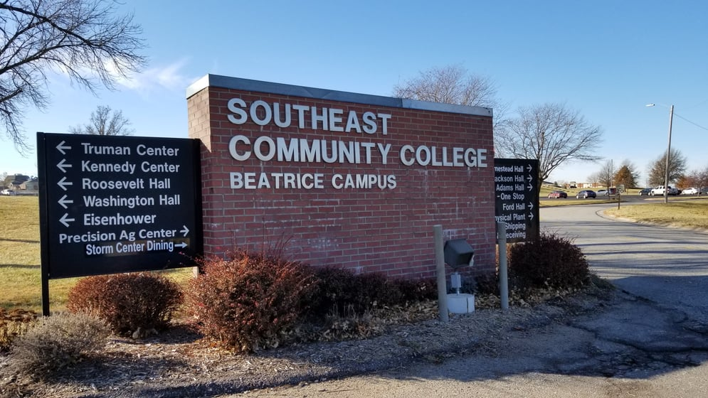

Academics
I graduated from Beatrice high school early and still did not have any real focus in my life, but I knew that going to college was going to afford me more options in the future. After high school I decided to pursue a management degree from SCC which was in town. The degree had many different classes, each focusing on a different aspect of doing business. Some of the ones I remember to this day are the Accounting, Economics, and Speech classes. The accounting classes were some of the first classes to really challenge me academically. The economic classes really got me interested in investing and money management strategies. The Speech classes made me pay more attention to how I show myself in public and the words I use to communicate with people.
After I graduated from scc for my fist degree I decided to go for a degree that aligned with my hobbies. I always wanted to know how things work and something that interested me was how a website worked I had looked at HTML before, but it was all gibberish.at first I could not decide on a focus for the longest time since there were 3 different focuses for the IT (Information Technology) program those being the programming, networking and security. I finally landed on programming since it was the one that seemed to make things happen while networking was about connecting things and security was about protecting them. Each is important but I was pursuing my hobby.